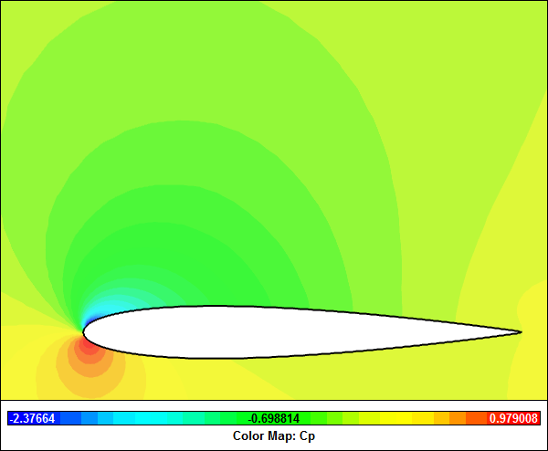
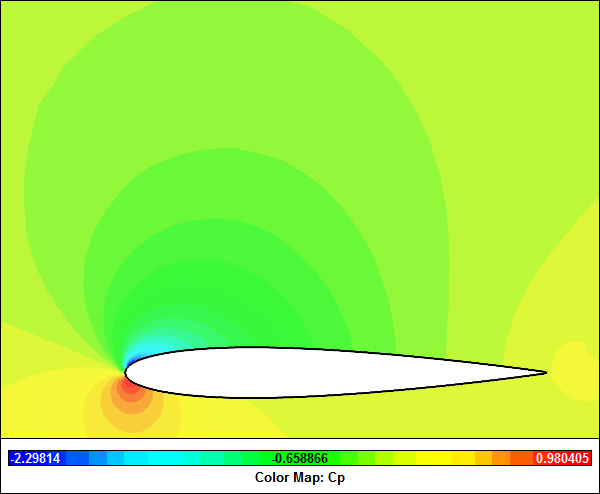
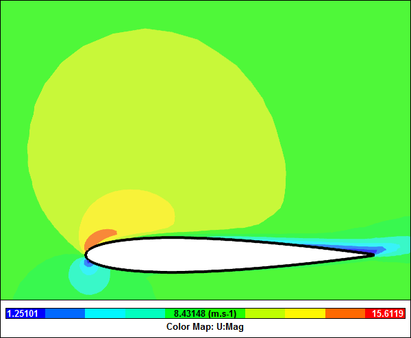
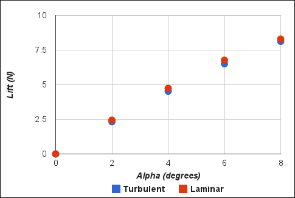
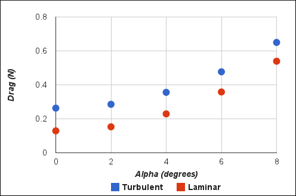

Laminar vs Turbulent Flow Over Airfoils
Which is more efficient: laminar or turbulent flow over an airfoil? Find out in this simple Computational Fluid Dynamics (CFD) study.
 CFD Simulation of Laminar Flow Over An AirfoilVelocity Magnitude Contours
CFD Simulation of Laminar Flow Over An AirfoilVelocity Magnitude Contours
Background
For streamlined bodies, such as airplanes, maintaining laminar boundary layer airflow is a sure way to minimize drag and so improve efficiency and reduce fuel costs. However, given the speeds and conditions that airplanes encounter, trying to maintain laminar flow is difficult. In addition to a Reynolds number dependency, laminar boundary layers are very sensitive to bugs (the squidgy variety) and dirt on airfoil leading edges. These imperfections can cause a transition to turbulence and increased drag. Worse still, a specially designed laminar wing can exhibit abrupt changes in airplane handling when laminar flow breaks down. Most airplane designers instead settle for turbulent boundary layers, sacrificing efficiency for predictable performance characteristics.
CFD Simulation
Using the NACA 0012 airfoil as the basis for this study it is relatively easy in CFD to compare fully laminar and fully turbulent simulations and assess the performance in terms of lift and drag at various angles of attack below the stall condition.
Laminar Pressure Coefficient (Cp) Contours at 8 Degrees
Turbulent Pressure Coefficient (Cp) Contours at 8 Degrees
Laminar Velocity Magnitude Contours at 8 Degrees
Turbulent Velocity Magnitude Contours at 8 Degrees
Lift Comparison for Laminar and Turbulent Flow
There is very little difference between the lift for the laminar and turbulent simulations.
Drag Comparison for Laminar and Turbulent Flow
As expected, the turbulent simulation produces more drag than the laminar simulation for all angles of incidence.
Conclusion
Clearly, if the conditions for laminar flow could be consistently maintained, then a designer would favor the more efficient, low drag, laminar wing. Alas, the real world is messy (remember squidgy bugs and dirt) and so an optimized turbulent wing flow is usually sought.
Future
Boeing has proposed a leading-edge suction method to maintain laminar flow over the tail of the new 777X. It appears this method relies on tiny holes to suck air from the boundary layer and prevent transition to turbulence. A major issue Boeing designers will need to address is how to keep the holes free of bugs and dirt? Maybe they are looking at a NASA study on special coatings to reduce bug splats?
Notes
- NACA 0012 mesh courtesy of FreeCASE and also used in the Caedium tutorial "Transonic Flow Over the NACA 0012 Airfoil".
- Simulations assume incompressible flow at 10 m/s.
- Simulations set up and performed in Caedium Professional using the incompressible, steady-state RANS solver, without a turbulence model (laminar) and with the k-omega SST turbulence model (turbulent).
Feedback
Questions? Ideas? Problems?

Recent blog posts
- CFD Simulates Distant Past
- Background on the Caedium v6.0 Release
- Long-Necked Dinosaurs Succumb To CFD
- CFD Provides Insight Into Mystery Fossils
- Wind Turbine Design According to Insects
- Runners Discover Drafting
- Wind Tunnel and CFD Reveal Best Cycling Tuck
- Active Aerodynamics on the Lamborghini Huracán Performante
- Fluidic Logic
- Stonehenge Vortex Revealed as April Fools' Day Distortion Field
 Get our Blog feed
Get our Blog feed
Comments
Fluid Flow Around Bluff Bodies
Hello,
I'm trying to simulate fluid flow around a cylinder in which vortex shedding will also be observed. I've defined the inlet velocity to be constant, assumed no slip conditions for the solid boundaries, but not sure of what the outlet conditions should be. Please I was wondering if anyone is able to provide some ideas on this.
Thanks.
Boundary Conditions
Assuming you have constructed a box surrounding the cylinder (diameter = D) then first you need to ensure that the box is at least 10xD away in all directions. Assign boundary conditions according to:
You can find a 2D example of vortex shedding around a cylinder at "Vortex Shedding Behind a Cylinder".
Lift and Drag Calculation in Caedium
Hi, Caedium is very helpful software, thanks for it
May you help me how can I calculate Lift and Drag in Caedium! (for 3D especially)
Review tutorial with lift and drag monitors
For lift and drag monitors review the tutorial "Flow Over a Rotating Wheel with Moving Ground"
The diagrams
In those diagrams, what shows that the airflow is turbulent or laminar?
Is it the flux density of the pressure contour lines?
View turbulent velocity
Visually you do not see the turbulence with a Reynolds-Averaged Navier-Stokes (RANS) method. Velocity vectors are modeled (solved) as averages that include turbulent velocity fluctuations in RANS. Large Eddy Simulations (LES) will show some of the 'large' turbulent eddies and Direct Numerical Simulation (DNS) show all relevant turbulent eddies within the velocity vectors.
Note that large scale recirculation zones (that can appear in laminar and turbulent flows) are distinct and different from turbulent eddies.